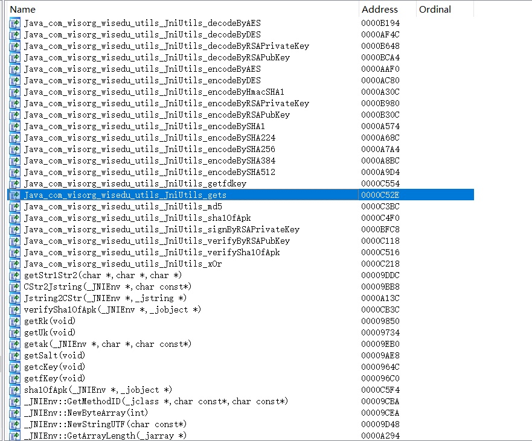
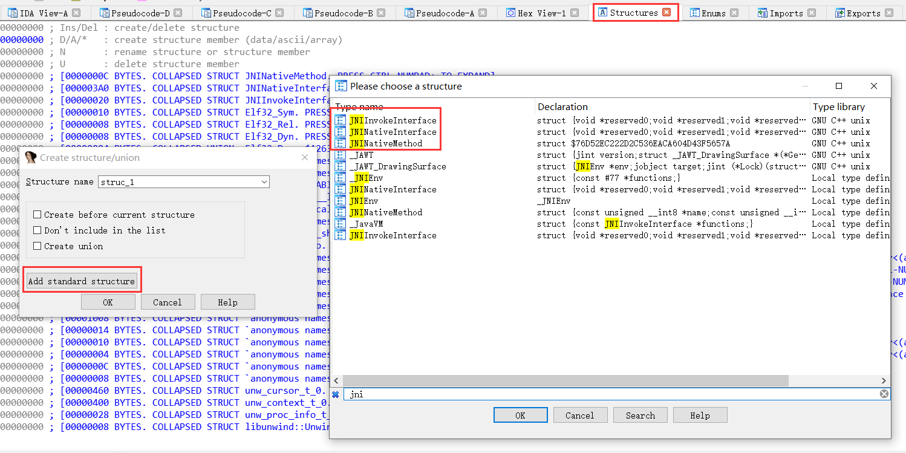
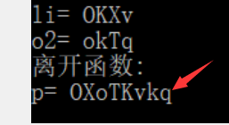

<!DOCTYPE html>
<html>
<head><meta name="generator" content="Hexo 3.9.0">
  <!-- hexo-inject:begin --><!-- hexo-inject:end --><meta charset="utf-8">
  <meta http-equiv="X-UA-Compatible" content="IE=edge">
  
  <title>今日校园APP逆向分析 | uint128&#39;s Blog</title>
  <meta name="description" content="uint128&#39;s blog">
  <meta name="keywords" content="uint128,uint128&#39;s blog,uint128.com">
  <meta name="HandheldFriendly" content="True">
  <meta name="apple-mobile-web-app-capable" content="yes">
  <link rel="shortcut icon" href="/">
  <link rel="alternate" href="/atom.xml" title="uint128's Blog">
  <meta name="viewport" content="width=device-width, initial-scale=1, maximum-scale=1">
  <meta name="description" content="为了做个自动填表工具，抓包、分析了下今日校园。本篇文章非常长，讲述了整个逆向分析的过程。分析过程对逆向和反逆向或许都有启发。">
<meta name="keywords" content="uint128,uint128&#39;s blog,uint128.com">
<meta property="og:type" content="article">
<meta property="og:title" content="今日校园APP逆向分析">
<meta property="og:url" content="https://uint128.com/2021/02/04/今日校园APP逆向分析/index.html">
<meta property="og:site_name" content="uint128&#39;s Blog">
<meta property="og:description" content="为了做个自动填表工具，抓包、分析了下今日校园。本篇文章非常长，讲述了整个逆向分析的过程。分析过程对逆向和反逆向或许都有启发。">
<meta property="og:locale" content="zh-cn">
<meta property="og:image" content="https://uint128.com/2021/02/04/今日校园APP逆向分析/ida1.png">
<meta property="og:image" content="https://uint128.com/2021/02/04/今日校园APP逆向分析/ida2.png">
<meta property="og:image" content="https://uint128.com/2021/02/04/今日校园APP逆向分析/frida_hook.png">
<meta property="og:updated_time" content="2021-02-04T03:27:00.218Z">
<meta name="twitter:card" content="summary">
<meta name="twitter:title" content="今日校园APP逆向分析">
<meta name="twitter:description" content="为了做个自动填表工具，抓包、分析了下今日校园。本篇文章非常长，讲述了整个逆向分析的过程。分析过程对逆向和反逆向或许都有启发。">
<meta name="twitter:image" content="https://uint128.com/2021/02/04/今日校园APP逆向分析/ida1.png">
    
  <link href="https://fonts.googleapis.com/css?family=Inconsolata|Titillium+Web" rel="stylesheet">
  <link href="https://fonts.googleapis.com/css?family=Roboto+Mono" rel="stylesheet">
  <link href="//cdnjs.cloudflare.com/ajax/libs/node-waves/0.7.5/waves.min.css" rel="stylesheet">
  <link rel="stylesheet" href="/style.css">
  <script>
    function setLoadingBarProgress(num) {
      document.getElementById('loading-bar').style.width=num+"%";
    }
  </script>
  <script src="/js/md5.js"></script>
<link rel="alternate" href="/atom.xml" title="uint128's Blog" type="application/atom+xml"><!-- hexo-inject:begin --><!-- hexo-inject:end -->
</head>
</html>
<body>
  <!-- hexo-inject:begin --><!-- hexo-inject:end --><div id="loading-bar-wrapper">
  <div id="loading-bar"></div>
</div>


  <script>setLoadingBarProgress(20)</script> 
  <header class="l_header">
	<div class='wrapper'>
		<div class="nav-main container container--flex">
			<a class="logo flat-box" href='/' >
				uint128's Blog
			</a>
			<div class='menu'>
				<ul class='h-list'>
					
						<li>
							<a class='flat-box nav-home' href='/'>
								Home
							</a>
						</li>
					
						<li>
							<a class='flat-box nav-archives' href='/archives'>
								Archives
							</a>
						</li>
					
						<li>
							<a class='flat-box nav-about' href='/about'>
								About
							</a>
						</li>
					
				</ul>
				<div class='underline'></div>
			</div>
			
				<div class="m_search">
					<form name="searchform" class="form u-search-form">
						<input type="text" class="input u-search-input" placeholder="Search" />
						<span class="icon icon-search"></span>
					</form>
				</div>
			
			<ul class='switcher h-list'>
				
					<li class='s-search'><a href='javascript:void(0)'><span class="icon icon-search flat-box"></span></a></li>
				
				<li class='s-menu'><a href='javascript:void(0)'><span class="icon icon-menu flat-box"></span></a></li>
			</ul>
		</div>
		
		<div class='nav-sub container container--flex'>
			<a class="logo" class="flat-box" href='javascript:void(0)'>
				Word of Forks
			</a>

			<ul class='switcher h-list'>
				<li class='s-comment'><a href='javascript:void(0)'><span class="icon icon-chat_bubble_outline flat-box"></span></a></li>
				<li class='s-top'><a href='javascript:void(0)'><span class="icon icon-arrow_upward flat-box"></span></a></li>
				<li class='s-toc'><a href='javascript:void(0)'><span class="icon icon-format_list_numbered flat-box"></span></a></li>
			</ul>
		</div>
	</div>
</header>
<aside class="menu-phone">
	<nav>
		
			<a href="/" class="nav-home nav">
				Home
			</a>
		
			<a href="/archives" class="nav-archives nav">
				Archives
			</a>
		
			<a href="/about" class="nav-about nav">
				About
			</a>
		
	</nav>
</aside>

    <script>setLoadingBarProgress(40);</script>
  <div class="l_body">
    <div class='container clearfix'>
      <div class='l_main'>
        <article id="post-今日校园APP逆向分析"
  class="post white-box article-type-post"
  itemscope itemprop="blogPost">
	<section class='meta'>
	<h2 class="title">
  	<a href="/2021/02/04/今日校园APP逆向分析/">
    	今日校园APP逆向分析
    </a>
  </h2>
	<time>
	  2月 4, 2021
	</time>
	
	</section>
	
		<section class="toc-wrapper"><ol class="toc"><li class="toc-item toc-level-2"><a class="toc-link" href="#准备阶段"><span class="toc-number">1.</span> <span class="toc-text">准备阶段</span></a></li><li class="toc-item toc-level-2"><a class="toc-link" href="#抓包分析"><span class="toc-number">2.</span> <span class="toc-text">抓包分析</span></a></li><li class="toc-item toc-level-2"><a class="toc-link" href="#JADX-反编译-APK-静态分析"><span class="toc-number">3.</span> <span class="toc-text">JADX 反编译 APK 静态分析</span></a><ol class="toc-child"><li class="toc-item toc-level-3"><a class="toc-link" href="#Frida-dexdump脱壳"><span class="toc-number">3.1.</span> <span class="toc-text">Frida-dexdump脱壳</span></a></li><li class="toc-item toc-level-3"><a class="toc-link" href="#分析getSecretKey请求"><span class="toc-number">3.2.</span> <span class="toc-text">分析getSecretKey请求</span></a></li></ol></li><li class="toc-item toc-level-2"><a class="toc-link" href="#IDA反编译-so进行静态分析"><span class="toc-number">4.</span> <span class="toc-text">IDA反编译.so进行静态分析</span></a><ol class="toc-child"><li class="toc-item toc-level-3"><a class="toc-link" href="#分析gets函数"><span class="toc-number">4.1.</span> <span class="toc-text">分析gets函数</span></a></li><li class="toc-item toc-level-3"><a class="toc-link" href="#分析encodeByRSAPubKey函数"><span class="toc-number">4.2.</span> <span class="toc-text">分析encodeByRSAPubKey函数</span></a></li></ol></li><li class="toc-item toc-level-2"><a class="toc-link" href="#解密请求返回的数据"><span class="toc-number">5.</span> <span class="toc-text">解密请求返回的数据</span></a><ol class="toc-child"><li class="toc-item toc-level-3"><a class="toc-link" href="#java层面的分析"><span class="toc-number">5.1.</span> <span class="toc-text">java层面的分析</span></a></li><li class="toc-item toc-level-3"><a class="toc-link" href="#IDA分析decodeByDES"><span class="toc-number">5.2.</span> <span class="toc-text">IDA分析decodeByDES</span></a></li></ol></li><li class="toc-item toc-level-2"><a class="toc-link" href="#其他"><span class="toc-number">6.</span> <span class="toc-text">其他</span></a></li><li class="toc-item toc-level-2"><a class="toc-link" href="#分析总结"><span class="toc-number">7.</span> <span class="toc-text">分析总结</span></a><ol class="toc-child"><li class="toc-item toc-level-3"><a class="toc-link" href="#反逆向"><span class="toc-number">7.1.</span> <span class="toc-text">反逆向</span></a></li><li class="toc-item toc-level-3"><a class="toc-link" href="#逆向"><span class="toc-number">7.2.</span> <span class="toc-text">逆向</span></a></li></ol></li><li class="toc-item toc-level-2"><a class="toc-link" href="#感想"><span class="toc-number">8.</span> <span class="toc-text">感想</span></a></li></ol></section>
	
	<section class="article typo">
  	<div class="article-entry" itemprop="articleBody">
    	<p>为了做个自动填表工具，抓包、分析了下今日校园。本篇文章非常长，讲述了整个逆向分析的过程。分析过程对逆向和反逆向或许都有启发。<br><a id="more"></a></p>
<h2 id="准备阶段"><a href="#准备阶段" class="headerlink" title="准备阶段"></a>准备阶段</h2><p>疫情每日填报实在是太烦了，这种机械化的事情，交给软件去做最好了。</p>
<p>打开 HttpCanary 抓包，什么都看不到，而且今日校园表现是断网的样子。我的手机是安装了 HttpCanary 的根证书的。看来<strong>今日校园用了 SSL Pinning 来阻止抓包</strong>。</p>
<p>这一步其实是比较好办的，对于常见的 http 库，可以用 Xposed + JustTrustMe (还有一个类似的 Xposed 插件：Unpinning)来 hook 信任证书相关的函数，让程序即使是抓包软件的证书也表现为信任，就可以抓包了。</p>
<p>但我的 K30 升级到 Android 11 后，尝试了很多次都装不上 Magisk 和 Xposed。我又没有其他的安卓设备，所以就只能用虚拟机了。</p>
<p>然而今日校园连电脑上的安卓模拟器都防住了，安卓模拟器一打开今日校园就直接闪退。把apk解压缩看了看，发现只有armabi-v7a。说明<strong>今日校园无法在 X86 的安卓上运行</strong>。</p>
<p>电脑的安卓模拟器不行，那就试试手机的安卓模拟器。我用的是 VMOS Prp(虚拟大师)，直接装了个 Android 5.x 的系统，省的要想办法绕开 SSL Pinning。</p>
<p>VMOS Pro 还是挺好用的，连 ADB 之类的都考虑好了，设置页面能一键打开。</p>
<p>抓包软件我用的是 Fiddler。给 VMOS 的 Wifi 设置代理服务器，装个 Fiddler 的证书，就能开始抓包了。</p>
<p>这一步有个小问题，VMOS 的设置页面是找不到 Wifi 设置的。要看到 Wifi 设置页面，可以装个 Wifi 大师之类的软件。或者用 ADB 执行下面的命令：</p>
<figure class="highlight bash"><table><tr><td class="gutter"><pre><span class="line">1</span><br></pre></td><td class="code"><pre><span class="line">adb shell am start -a android.intent.action.MAIN -n  com.android.settings/.wifi.WifiSettings</span><br></pre></td></tr></table></figure>
<p>上面这个命令能直接打开 Wifi 设置页面。</p>
<h2 id="抓包分析"><a href="#抓包分析" class="headerlink" title="抓包分析"></a>抓包分析</h2><p>刚打开今日校园，Fiddler 就刷屏了，大多数都是各种安卓Sdk的请求(无语)。屏蔽了十几个域名后，终于只剩下今日校园的请求了。</p>
<p><strong>不得不说，今日校园对安全还是很看重的，抓包看到的内容里，无论是请求还是响应，就没有明文的字段。</strong></p>
<p>不仅是没有明文字段，连应该明文的地方，都用了 “p”、”s” 这种简短的字符，防止被猜测出含义。不知道今日校园是如何做到这一步的，如果是手动混淆，那程序员实在太惨了。</p>
<details>

<figure class="highlight plain"><table><tr><td class="gutter"><pre><span class="line">1</span><br><span class="line">2</span><br><span class="line">3</span><br><span class="line">4</span><br><span class="line">5</span><br><span class="line">6</span><br><span class="line">7</span><br><span class="line">8</span><br><span class="line">9</span><br><span class="line">10</span><br><span class="line">11</span><br><span class="line">12</span><br><span class="line">13</span><br><span class="line">14</span><br><span class="line">15</span><br><span class="line">16</span><br><span class="line">17</span><br><span class="line">18</span><br><span class="line">19</span><br><span class="line">20</span><br><span class="line">21</span><br><span class="line">22</span><br><span class="line">23</span><br><span class="line">24</span><br><span class="line">25</span><br></pre></td><td class="code"><pre><span class="line">POST https://mobile.campushoy.com/app/auth/dynamic/secret/getSecretKey/v-8213 HTTP/1.1</span><br><span class="line">sessionTokenKey: szFn6zAbjjU=</span><br><span class="line">SessionToken: szFn6zAbjjU=</span><br><span class="line">clientType: cpdaily_student</span><br><span class="line">tenantId: </span><br><span class="line">User-Agent: Mozilla/5.0 (Linux; Android 5.1.1; vmos Build/LMY48G; wv) AppleWebKit/537.36 (KHTML, like Gecko) Version/4.0 Chrome/52.0.2743.100 Mobile Safari/537.36 okhttp/3.12.4</span><br><span class="line">deviceType: 1</span><br><span class="line">CpdailyClientType: CPDAILY</span><br><span class="line">CpdailyStandAlone: 0</span><br><span class="line">CpdailyInfo: XvWN4SWqyX648L13hW5koOHt5AfBN6jFTi4zR23WludYuPZfzB8fDc5UZUar HHOmexyCccMic4Ad+D7MhoJRl1OJiSDRaFQXyGhY3RphecMkXaPEB+NoKx9O wYd5FSPdIgNvb5nxh7xns6eTidSC+FdD6lZSI3k15PI8BP/iRwLIWe+C6Kb3 /uyzTwXsv4w1</span><br><span class="line">Content-Type: application/json; charset=UTF-8</span><br><span class="line">Content-Length: 221</span><br><span class="line">Host: mobile.campushoy.com</span><br><span class="line">Connection: Keep-Alive</span><br><span class="line">Accept-Encoding: gzip</span><br><span class="line">Cookie: acw_tc=2f624a7116118599368446428e16406bf20229eef5cf7fa3bf7a0952dd1bed</span><br><span class="line"></span><br><span class="line">&#123;&quot;p&quot;:&quot;RyTf8OmNAEbj6Z2gakUc/WT0jxkW8lfkprxy9B4htHXG/S+87jGVfnoZ9t7a cGslGlxLmd0m3JAhdzH4PApmOTRbxm9AED93VleWHiaGaUVPfJu4KVLQLB5T xThWZyz2ZFG+AbUsgItCSkLRBn9m3FGV/D6CYaaxHXu9Mvv4zLw=&quot;,&quot;s&quot;:&quot;b837371696c3773494d25acecd543ca3&quot;&#125;</span><br><span class="line">HTTP/1.1 200</span><br><span class="line">Date: Thu, 28 Jan 2021 18:55:40 GMT</span><br><span class="line">Content-Type: application/json;charset=UTF-8</span><br><span class="line">Connection: keep-alive</span><br><span class="line">Content-Length: 209</span><br><span class="line"></span><br><span class="line">&#123;&quot;errCode&quot;:0,&quot;errMsg&quot;:null,&quot;data&quot;:&quot;R1vtCBeFahygfP0Ik2Ojs47NZq3JF85Nfo/apHc5AcRzxa8JehCBq+0uZn+Cl7Mm+i7u13eQyUauW2dZA+5OVKzqP51FvYWuHb0BpjsdcDimVJQv8xr9lUBHk8vRrvkVZKbHgXkmUXvfLCxPlzHiRgckeXSXCIaTwYk7XWjKeQQ=&quot;&#125;</span><br></pre></td></tr></table></figure>

</details>

<h2 id="JADX-反编译-APK-静态分析"><a href="#JADX-反编译-APK-静态分析" class="headerlink" title="JADX 反编译 APK 静态分析"></a>JADX 反编译 APK 静态分析</h2><h3 id="Frida-dexdump脱壳"><a href="#Frida-dexdump脱壳" class="headerlink" title="Frida-dexdump脱壳"></a>Frida-dexdump脱壳</h3><p>既然有加密，那就没办法了，必须要逆向分析一下了。</p>
<p>从抓包的情况来看，对今日校园是可以比较放心的。加密那么复杂的 APP 会没有加壳吗？所以我压根没看加壳情况，直接用 frida-dexdump 脱壳。</p>
<blockquote>
<p>这一步有一个点需要注意，由于是在手机上运行的 frida-server，需要做一个端口转发，才能在电脑上用 frida-dexdump。不然 frida-dexdump 是找不到 frida-server 的。frida-server 默认的监听端口是 27042，可以用 adb 做一个转发。<br><figure class="highlight bash"><table><tr><td class="gutter"><pre><span class="line">1</span><br><span class="line">2</span><br></pre></td><td class="code"><pre><span class="line">&gt; adb forward tcp:27042 tcp:27042</span><br><span class="line">&gt;</span><br></pre></td></tr></table></figure></p>
<p>如果你足够熟悉网络协议相关的知识，这不是个问题。</p>
</blockquote>
<p>frida-dexdump 真的是我用过的最好用的傻瓜式工具，很轻松地帮我整出了 29 个 dex 文件。</p>
<p>这里有个小技巧，把这些 dex 文件重命名为 classes.dex、classes1.dex、…, 然后压缩成 zip，把后缀改为 apk。再用 jadx 打开这个 apk，就能一次载入所有的 dex 文件了。(或者使用 jadx 1.2，这个版本可以打开多个 dex 文件，我也是后来才发现)</p>
<p>以上都是些基本操作了。</p>
<h3 id="分析getSecretKey请求"><a href="#分析getSecretKey请求" class="headerlink" title="分析getSecretKey请求"></a>分析getSecretKey请求</h3><p>接下来就是用 jadx 去逆向分析加密的算法。</p>
<p>打开那 29 个 dex 文件，反编译后搜索文本。(我载入的时候有一个 dex 文件有问题，jadx 1.2 无法载入，排除之后才能载入。jadx 1.1 可以载入，但也是提示有错误，无法得到 smali 代码。暂时不清楚什么原因。)</p>
<p>先搜索前面提到的第一个请求 <strong>auth/dynamic/secret/getSecretKey</strong>，发现如下代码：</p>
<figure class="highlight java"><table><tr><td class="gutter"><pre><span class="line">1</span><br><span class="line">2</span><br></pre></td><td class="code"><pre><span class="line"><span class="meta">@POST</span>(<span class="string">"app/auth/dynamic/secret/getSecretKey/v-8213"</span>)</span><br><span class="line">Observable&lt;Wrapper&lt;String&gt;&gt; getSecretKey(<span class="meta">@Body</span> Map&lt;String, String&gt; map);</span><br></pre></td></tr></table></figure>
<p>搜索一下用例，只有一个：</p>
<figure class="highlight java"><table><tr><td class="gutter"><pre><span class="line">1</span><br><span class="line">2</span><br><span class="line">3</span><br><span class="line">4</span><br><span class="line">5</span><br><span class="line">6</span><br><span class="line">7</span><br><span class="line">8</span><br></pre></td><td class="code"><pre><span class="line"><span class="comment">/* renamed from: l */</span></span><br><span class="line"><span class="function"><span class="keyword">public</span> <span class="keyword">static</span> <span class="keyword">void</span> <span class="title">m66682l</span><span class="params">(uy0&lt;String&gt; uy0)</span> </span>&#123;</span><br><span class="line">    HashMap hashMap = <span class="keyword">new</span> HashMap();</span><br><span class="line">    String e = ku1.m75647e(((Object) UUID.randomUUID()) + HiAnalyticsConstant.REPORT_VAL_SEPARATOR + ku1.m75649g(UIUtils.getContext()), UIUtils.getContext());</span><br><span class="line">    hashMap.put(<span class="string">"p"</span>, e);</span><br><span class="line">    hashMap.put(<span class="string">"s"</span>, ss0.m80546a(<span class="string">"p="</span> + e + ContainerUtils.FIELD_DELIMITER + ku1.m75648f(UIUtils.getContext())));</span><br><span class="line">    f59478a.mo101637z(f59479b.getSecretKey(hashMap), uy0);</span><br><span class="line">&#125;</span><br></pre></td></tr></table></figure>
<p>前面抓包时也看到，请求体是个 Json，有 “p” 和 “s” 两个字段，和反编译的代码完全对上了。</p>
<p>代码里的 <code>HiAnalyticsConstant.REPORT_VAL_SEPARATOR</code> 和 <code>ku1.m75649g()</code> 都是字符串常量，分别是 “|” 和 “firstv”。</p>
<p>因此第一个参数 p 的内容已经出来了:</p>
<figure class="highlight java"><table><tr><td class="gutter"><pre><span class="line">1</span><br></pre></td><td class="code"><pre><span class="line">p = ku1.m75647e( UUID.randomUUID() + <span class="string">"|"</span> + <span class="string">"firstv"</span> );</span><br></pre></td></tr></table></figure>
<p>点进去看一眼 <strong>ku1.m75647e</strong> 函数：</p>
<figure class="highlight java"><table><tr><td class="gutter"><pre><span class="line">1</span><br><span class="line">2</span><br><span class="line">3</span><br><span class="line">4</span><br></pre></td><td class="code"><pre><span class="line"><span class="comment">/* renamed from: e */</span></span><br><span class="line"><span class="function"><span class="keyword">public</span> <span class="keyword">static</span> String <span class="title">m75647e</span><span class="params">(String str, Object obj)</span> </span>&#123;</span><br><span class="line">    <span class="keyword">return</span> ju1.m75051d(JniUtils.encodeByRSAPubKey(str.getBytes(), obj));</span><br><span class="line">&#125;</span><br></pre></td></tr></table></figure>
<p>其中 <code>ju1.m75051d()</code> 函数是 base64 编码的函数(熟悉base64编码的话，代码的特征很明显，一眼看出)。</p>
<p>另一个函数就不怎么好分析了，来自 <code>JniUtils</code> 类的静态函数，很可能是个 native 函数，函数具体实现在 native 层。</p>
<p>点进去一看，果然如此：</p>
<figure class="highlight java"><table><tr><td class="gutter"><pre><span class="line">1</span><br></pre></td><td class="code"><pre><span class="line"><span class="keyword">public</span> <span class="keyword">static</span> <span class="keyword">native</span> <span class="keyword">byte</span>[] encodeByRSAPubKey(<span class="keyword">byte</span>[] bArr, Object obj);</span><br></pre></td></tr></table></figure>
<p>不过从名字可以看出很多的内容，比如函数的本质是用Public Key 的 RSA 加密，而且函数没有传递 Public Key，说明 Public Key 和函数的实现是在一起的。因此只要能在 so 文件里找到 Public Key 就可以自己加密了。</p>
<p>另一个参数 <strong>s</strong> 就不再赘述了，他比较简单，是对 p 参数的值算了下 MD5：</p>
<figure class="highlight c++"><table><tr><td class="gutter"><pre><span class="line">1</span><br></pre></td><td class="code"><pre><span class="line">s = MD5(<span class="string">"p="</span> + p + <span class="string">"&amp;"</span> + JniUtils.gets());</span><br></pre></td></tr></table></figure>
<p>其中这个 <code>JniUtils.gets()</code> 函数不用参数还返回了一个字符串。可以猜测这个字符串是固定值。(后面的分析也证实，这个函数的 s 应该是 Salt 的意思，给 MD5 加盐的)</p>
<p>总览一下这个 JniUtils，可以感受一下今日校园的加密方法有多么丰富。AES、DES都是很常见的，一般的 APP 都是用其中的一种。<strong>今日校园AES、DES、RSA三种常见的加密方法都用上了</strong>。除此之外还有一些摘要算法，MD5、SHA1之类的，这些到不是很重要。</p>
<details>

<figure class="highlight java"><table><tr><td class="gutter"><pre><span class="line">1</span><br><span class="line">2</span><br><span class="line">3</span><br><span class="line">4</span><br><span class="line">5</span><br><span class="line">6</span><br><span class="line">7</span><br><span class="line">8</span><br><span class="line">9</span><br><span class="line">10</span><br><span class="line">11</span><br><span class="line">12</span><br><span class="line">13</span><br><span class="line">14</span><br><span class="line">15</span><br><span class="line">16</span><br><span class="line">17</span><br><span class="line">18</span><br><span class="line">19</span><br><span class="line">20</span><br><span class="line">21</span><br><span class="line">22</span><br><span class="line">23</span><br><span class="line">24</span><br><span class="line">25</span><br><span class="line">26</span><br><span class="line">27</span><br><span class="line">28</span><br><span class="line">29</span><br><span class="line">30</span><br><span class="line">31</span><br><span class="line">32</span><br><span class="line">33</span><br><span class="line">34</span><br><span class="line">35</span><br><span class="line">36</span><br><span class="line">37</span><br><span class="line">38</span><br><span class="line">39</span><br><span class="line">40</span><br><span class="line">41</span><br><span class="line">42</span><br><span class="line">43</span><br><span class="line">44</span><br><span class="line">45</span><br><span class="line">46</span><br><span class="line">47</span><br><span class="line">48</span><br><span class="line">49</span><br><span class="line">50</span><br></pre></td><td class="code"><pre><span class="line"><span class="keyword">public</span> <span class="class"><span class="keyword">class</span> <span class="title">JniUtils</span> </span>&#123;</span><br><span class="line">    <span class="keyword">static</span> &#123;</span><br><span class="line">        System.loadLibrary(<span class="string">"crypto"</span>);</span><br><span class="line">        System.loadLibrary(<span class="string">"cipher"</span>);</span><br><span class="line">    &#125;</span><br><span class="line"></span><br><span class="line">    <span class="keyword">public</span> <span class="keyword">static</span> <span class="keyword">native</span> <span class="keyword">byte</span>[] decodeByAES(<span class="keyword">byte</span>[] bArr, <span class="keyword">byte</span>[] bArr2);</span><br><span class="line"></span><br><span class="line">    <span class="keyword">public</span> <span class="keyword">static</span> <span class="keyword">native</span> <span class="keyword">byte</span>[] decodeByDES(String str, <span class="keyword">byte</span>[] bArr, Object obj, <span class="keyword">boolean</span> z);</span><br><span class="line"></span><br><span class="line">    <span class="keyword">public</span> <span class="keyword">static</span> <span class="keyword">native</span> <span class="keyword">byte</span>[] decodeByRSAPrivateKey(<span class="keyword">byte</span>[] bArr, Object obj);</span><br><span class="line"></span><br><span class="line">    <span class="keyword">public</span> <span class="keyword">static</span> <span class="keyword">native</span> <span class="keyword">byte</span>[] decodeByRSAPubKey(<span class="keyword">byte</span>[] bArr, <span class="keyword">byte</span>[] bArr2, Object obj);</span><br><span class="line"></span><br><span class="line">    <span class="keyword">public</span> <span class="keyword">static</span> <span class="keyword">native</span> <span class="keyword">byte</span>[] encodeByAES(<span class="keyword">byte</span>[] bArr, <span class="keyword">byte</span>[] bArr2);</span><br><span class="line"></span><br><span class="line">    <span class="keyword">public</span> <span class="keyword">static</span> <span class="keyword">native</span> <span class="keyword">byte</span>[] encodeByDES(String str, <span class="keyword">byte</span>[] bArr, Object obj, <span class="keyword">boolean</span> z);</span><br><span class="line"></span><br><span class="line">    <span class="keyword">public</span> <span class="keyword">static</span> <span class="keyword">native</span> <span class="keyword">byte</span>[] encodeByHmacSHA1(Context context, <span class="keyword">byte</span>[] bArr);</span><br><span class="line"></span><br><span class="line">    <span class="keyword">public</span> <span class="keyword">static</span> <span class="keyword">native</span> <span class="keyword">byte</span>[] encodeByRSAPrivateKey(<span class="keyword">byte</span>[] bArr, <span class="keyword">byte</span>[] bArr2, Object obj);</span><br><span class="line"></span><br><span class="line">    <span class="keyword">public</span> <span class="keyword">static</span> <span class="keyword">native</span> <span class="keyword">byte</span>[] encodeByRSAPubKey(<span class="keyword">byte</span>[] bArr, Object obj);</span><br><span class="line"></span><br><span class="line">    <span class="function"><span class="keyword">public</span> <span class="keyword">static</span> <span class="keyword">native</span> String <span class="title">encodeBySHA1</span><span class="params">(<span class="keyword">byte</span>[] bArr)</span></span>;</span><br><span class="line"></span><br><span class="line">    <span class="function"><span class="keyword">public</span> <span class="keyword">static</span> <span class="keyword">native</span> String <span class="title">encodeBySHA224</span><span class="params">(<span class="keyword">byte</span>[] bArr)</span></span>;</span><br><span class="line"></span><br><span class="line">    <span class="function"><span class="keyword">public</span> <span class="keyword">static</span> <span class="keyword">native</span> String <span class="title">encodeBySHA256</span><span class="params">(<span class="keyword">byte</span>[] bArr)</span></span>;</span><br><span class="line"></span><br><span class="line">    <span class="function"><span class="keyword">public</span> <span class="keyword">static</span> <span class="keyword">native</span> String <span class="title">encodeBySHA384</span><span class="params">(<span class="keyword">byte</span>[] bArr)</span></span>;</span><br><span class="line"></span><br><span class="line">    <span class="function"><span class="keyword">public</span> <span class="keyword">static</span> <span class="keyword">native</span> String <span class="title">encodeBySHA512</span><span class="params">(<span class="keyword">byte</span>[] bArr)</span></span>;</span><br><span class="line"></span><br><span class="line">    <span class="function"><span class="keyword">public</span> <span class="keyword">static</span> <span class="keyword">native</span> String <span class="title">getfdkey</span><span class="params">(String str, Object obj)</span></span>;</span><br><span class="line"></span><br><span class="line">    <span class="function"><span class="keyword">public</span> <span class="keyword">static</span> <span class="keyword">native</span> String <span class="title">gets</span><span class="params">(Object obj)</span></span>;</span><br><span class="line"></span><br><span class="line">    <span class="function"><span class="keyword">public</span> <span class="keyword">static</span> <span class="keyword">native</span> String <span class="title">md5</span><span class="params">(<span class="keyword">byte</span>[] bArr)</span></span>;</span><br><span class="line"></span><br><span class="line">    <span class="function"><span class="keyword">public</span> <span class="keyword">static</span> <span class="keyword">native</span> String <span class="title">sha1OfApk</span><span class="params">(Context context)</span></span>;</span><br><span class="line"></span><br><span class="line">    <span class="keyword">public</span> <span class="keyword">static</span> <span class="keyword">native</span> <span class="keyword">byte</span>[] signByRSAPrivateKey(<span class="keyword">byte</span>[] bArr, <span class="keyword">byte</span>[] bArr2);</span><br><span class="line"></span><br><span class="line">    <span class="function"><span class="keyword">public</span> <span class="keyword">static</span> <span class="keyword">native</span> <span class="keyword">int</span> <span class="title">verifyByRSAPubKey</span><span class="params">(<span class="keyword">byte</span>[] bArr, <span class="keyword">byte</span>[] bArr2, <span class="keyword">byte</span>[] bArr3)</span></span>;</span><br><span class="line"></span><br><span class="line">    <span class="function"><span class="keyword">public</span> <span class="keyword">static</span> <span class="keyword">native</span> <span class="keyword">boolean</span> <span class="title">verifySha1OfApk</span><span class="params">(Context context)</span></span>;</span><br><span class="line"></span><br><span class="line">    <span class="keyword">public</span> <span class="keyword">static</span> <span class="keyword">native</span> <span class="keyword">byte</span>[] xOr(<span class="keyword">byte</span>[] bArr);</span><br><span class="line">&#125;</span><br></pre></td></tr></table></figure>

</details>

<h2 id="IDA反编译-so进行静态分析"><a href="#IDA反编译-so进行静态分析" class="headerlink" title="IDA反编译.so进行静态分析"></a>IDA反编译.so进行静态分析</h2><p>接下来自然是用 IDA 分析 .so 文件了。这个 JniUtils 涉及到两个 .so 文件, libcrypto.so 和 libcipher.so。其中 JniUtils 相关的的代码在 <strong>libcipher.so</strong> 文件里。</p>
<p></p>
<p>这里又有一个小技巧，由于是 JNI 相关的代码，可以插入一些结构体让反编译的伪代码更加清晰。在 structures 窗口按下快捷键 insert，就可以插入结构体了，JNI 相关的结构体是标准结构体，IDA 自带。</p>
<p></p>
<h3 id="分析gets函数"><a href="#分析gets函数" class="headerlink" title="分析gets函数"></a>分析gets函数</h3><p>先从 <code>gets()</code> 开始入手，它明显比较简单。</p>
<figure class="highlight c++"><table><tr><td class="gutter"><pre><span class="line">1</span><br><span class="line">2</span><br><span class="line">3</span><br><span class="line">4</span><br><span class="line">5</span><br><span class="line">6</span><br><span class="line">7</span><br><span class="line">8</span><br><span class="line">9</span><br><span class="line">10</span><br><span class="line">11</span><br><span class="line">12</span><br><span class="line">13</span><br><span class="line">14</span><br><span class="line">15</span><br><span class="line">16</span><br><span class="line">17</span><br><span class="line">18</span><br><span class="line">19</span><br><span class="line">20</span><br><span class="line">21</span><br></pre></td><td class="code"><pre><span class="line">jstring __<span class="function">fastcall <span class="title">Java_com_wisorg_wisedu_utils_JniUtils_gets</span><span class="params">(JNIEnv *env, jclass instance, jobject context)</span></span></span><br><span class="line"><span class="function"></span>&#123;</span><br><span class="line">  JNIEnv *v3; <span class="comment">// ST08_4</span></span><br><span class="line">  <span class="keyword">char</span> *v4; <span class="comment">// r0</span></span><br><span class="line"></span><br><span class="line">  v3 = env;</span><br><span class="line">  v4 = getSalt();</span><br><span class="line">  <span class="keyword">return</span> _JNIEnv::NewStringUTF(v3, (<span class="keyword">const</span> <span class="keyword">unsigned</span> __int8 *)v4);</span><br><span class="line">&#125;</span><br><span class="line"></span><br><span class="line"><span class="function"><span class="keyword">char</span> *<span class="title">getSalt</span><span class="params">()</span></span></span><br><span class="line"><span class="function"></span>&#123;</span><br><span class="line">  <span class="keyword">char</span> *v0; <span class="comment">// ST14_4</span></span><br><span class="line"></span><br><span class="line">  v0 = (<span class="keyword">char</span> *)<span class="built_in">malloc</span>(<span class="number">0x400</span>u);</span><br><span class="line">  <span class="built_in">strcpy</span>(v0, (<span class="keyword">const</span> <span class="keyword">char</span> *)sk1); <span class="comment">// sk1="2cf24dba5fb0a30e26e8"</span></span><br><span class="line">  _strcat_chk(v0, sk2, <span class="number">-1</span>);      <span class="comment">// sk2="3b2ac5b9"</span></span><br><span class="line">  _strcat_chk(v0, sk3, <span class="number">-1</span>);      <span class="comment">// sk3="e29e1b161e5c1fa7425e73"</span></span><br><span class="line">  _strcat_chk(v0, sk4, <span class="number">-1</span>);      <span class="comment">// sk4="043362938b9824"</span></span><br><span class="line">  <span class="keyword">return</span> v0;</span><br><span class="line">&#125;</span><br></pre></td></tr></table></figure>
<p>这两个函数的伪代码都很清晰，不多说明，本质就是返回字符串 <strong>“2cf24dba5fb0a30e26e83b2ac5b9e29e1b161e5c1fa7425e73043362938b9824”</strong>。</p>
<h3 id="分析encodeByRSAPubKey函数"><a href="#分析encodeByRSAPubKey函数" class="headerlink" title="分析encodeByRSAPubKey函数"></a>分析encodeByRSAPubKey函数</h3><p>然后再去看 <code>encodeByRSAPubKey</code> 函数。</p>
<details>

<figure class="highlight c++"><table><tr><td class="gutter"><pre><span class="line">1</span><br><span class="line">2</span><br><span class="line">3</span><br><span class="line">4</span><br><span class="line">5</span><br><span class="line">6</span><br><span class="line">7</span><br><span class="line">8</span><br><span class="line">9</span><br><span class="line">10</span><br><span class="line">11</span><br><span class="line">12</span><br><span class="line">13</span><br><span class="line">14</span><br><span class="line">15</span><br><span class="line">16</span><br><span class="line">17</span><br><span class="line">18</span><br><span class="line">19</span><br><span class="line">20</span><br><span class="line">21</span><br><span class="line">22</span><br><span class="line">23</span><br><span class="line">24</span><br><span class="line">25</span><br><span class="line">26</span><br><span class="line">27</span><br><span class="line">28</span><br><span class="line">29</span><br><span class="line">30</span><br><span class="line">31</span><br><span class="line">32</span><br><span class="line">33</span><br><span class="line">34</span><br><span class="line">35</span><br><span class="line">36</span><br><span class="line">37</span><br><span class="line">38</span><br><span class="line">39</span><br><span class="line">40</span><br><span class="line">41</span><br><span class="line">42</span><br><span class="line">43</span><br><span class="line">44</span><br><span class="line">45</span><br><span class="line">46</span><br><span class="line">47</span><br><span class="line">48</span><br><span class="line">49</span><br><span class="line">50</span><br><span class="line">51</span><br><span class="line">52</span><br><span class="line">53</span><br><span class="line">54</span><br><span class="line">55</span><br><span class="line">56</span><br><span class="line">57</span><br><span class="line">58</span><br><span class="line">59</span><br><span class="line">60</span><br><span class="line">61</span><br><span class="line">62</span><br><span class="line">63</span><br><span class="line">64</span><br><span class="line">65</span><br><span class="line">66</span><br><span class="line">67</span><br><span class="line">68</span><br><span class="line">69</span><br><span class="line">70</span><br><span class="line">71</span><br><span class="line">72</span><br><span class="line">73</span><br><span class="line">74</span><br><span class="line">75</span><br><span class="line">76</span><br><span class="line">77</span><br><span class="line">78</span><br><span class="line">79</span><br><span class="line">80</span><br><span class="line">81</span><br><span class="line">82</span><br><span class="line">83</span><br><span class="line">84</span><br><span class="line">85</span><br><span class="line">86</span><br><span class="line">87</span><br><span class="line">88</span><br><span class="line">89</span><br></pre></td><td class="code"><pre><span class="line">jbyteArray __<span class="function">fastcall <span class="title">Java_com_wisorg_wisedu_utils_JniUtils_encodeByRSAPubKey</span><span class="params">(JNIEnv *env, jclass instance, jbyteArray src_, jobject context)</span></span></span><br><span class="line"><span class="function"></span>&#123;</span><br><span class="line">  <span class="keyword">int</span> v4; <span class="comment">// ST50_4</span></span><br><span class="line">  <span class="keyword">int</span> v5; <span class="comment">// r1</span></span><br><span class="line">  <span class="keyword">int</span> v6; <span class="comment">// STF4_4</span></span><br><span class="line">  <span class="keyword">int</span> v7; <span class="comment">// r0</span></span><br><span class="line">  <span class="keyword">int</span> v9; <span class="comment">// [sp+14h] [bp-FCh]</span></span><br><span class="line">  _jbyteArray *v10; <span class="comment">// [sp+38h] [bp-D8h]</span></span><br><span class="line">  <span class="keyword">int</span> i; <span class="comment">// [sp+3Ch] [bp-D4h]</span></span><br><span class="line">  jbyte *buf; <span class="comment">// [sp+40h] [bp-D0h]</span></span><br><span class="line">  <span class="keyword">void</span> *v13; <span class="comment">// [sp+44h] [bp-CCh]</span></span><br><span class="line">  <span class="keyword">void</span> *ptr; <span class="comment">// [sp+48h] [bp-C8h]</span></span><br><span class="line">  <span class="keyword">int</span> v15; <span class="comment">// [sp+4Ch] [bp-C4h]</span></span><br><span class="line">  <span class="keyword">int</span> v16; <span class="comment">// [sp+54h] [bp-BCh]</span></span><br><span class="line">  <span class="keyword">int</span> v17; <span class="comment">// [sp+58h] [bp-B8h]</span></span><br><span class="line">  jsize length; <span class="comment">// [sp+60h] [bp-B0h]</span></span><br><span class="line">  jsize size; <span class="comment">// [sp+6Ch] [bp-A4h]</span></span><br><span class="line">  jbyte *elems; <span class="comment">// [sp+70h] [bp-A0h]</span></span><br><span class="line">  <span class="keyword">char</span> *v21; <span class="comment">// [sp+74h] [bp-9Ch]</span></span><br><span class="line">  <span class="keyword">unsigned</span> __int8 *s1; <span class="comment">// [sp+78h] [bp-98h]</span></span><br><span class="line">  _jbyteArray *<span class="built_in">array</span>; <span class="comment">// [sp+80h] [bp-90h]</span></span><br><span class="line">  _JNIEnv *enva; <span class="comment">// [sp+88h] [bp-88h]</span></span><br><span class="line">  _jbyteArray *v25; <span class="comment">// [sp+8Ch] [bp-84h]</span></span><br><span class="line"></span><br><span class="line">  enva = env;</span><br><span class="line">  <span class="built_in">array</span> = src_;</span><br><span class="line">  s1 = sha1OfApk(env, context);</span><br><span class="line">  <span class="keyword">if</span> ( !<span class="built_in">strcmp</span>((<span class="keyword">const</span> <span class="keyword">char</span> *)s1, (<span class="keyword">const</span> <span class="keyword">char</span> *)signatureOfApk) )</span><br><span class="line">  &#123;</span><br><span class="line">    v21 = getUk();</span><br><span class="line">    elems = _JNIEnv::GetByteArrayElements(enva, <span class="built_in">array</span>, <span class="number">0</span>);</span><br><span class="line">    size = _JNIEnv::GetArrayLength(enva, &amp;<span class="built_in">array</span>-&gt;<span class="number">0</span>);</span><br><span class="line">    length = <span class="number">0</span>;</span><br><span class="line">    v17 = <span class="number">0</span>;</span><br><span class="line">    v4 = BIO_new_mem_buf(v21);</span><br><span class="line">    v16 = PEM_read_bio_RSA_PUBKEY(v4, <span class="number">0</span>, <span class="number">0</span>, <span class="number">0</span>);</span><br><span class="line">    BIO_free_all(v4);</span><br><span class="line">    v15 = RSA_size(v16);</span><br><span class="line">    ptr = <span class="built_in">malloc</span>(size);</span><br><span class="line">    v13 = <span class="built_in">malloc</span>(v15);</span><br><span class="line">    buf = (jbyte *)<span class="built_in">malloc</span>((size / (v15 - <span class="number">11</span>) + <span class="number">1</span>) * v15);</span><br><span class="line">    _aeabi_memset();</span><br><span class="line">    _aeabi_memset();</span><br><span class="line">    _aeabi_memcpy();</span><br><span class="line">    <span class="keyword">for</span> ( i = <span class="number">0</span>; ; ++i )</span><br><span class="line">    &#123;</span><br><span class="line">      v5 = i;</span><br><span class="line">      <span class="keyword">if</span> ( i &gt; size / (v15 - <span class="number">11</span>) )</span><br><span class="line">        <span class="keyword">break</span>;</span><br><span class="line">      v5 = i;</span><br><span class="line">      <span class="keyword">if</span> ( i == size / (v15 - <span class="number">11</span>) )</span><br><span class="line">      &#123;</span><br><span class="line">        v5 = size % (v15 - <span class="number">11</span>);</span><br><span class="line">        v9 = size % (v15 - <span class="number">11</span>);</span><br><span class="line">      &#125;</span><br><span class="line">      <span class="keyword">else</span></span><br><span class="line">      &#123;</span><br><span class="line">        v9 = v15 - <span class="number">11</span>;</span><br><span class="line">      &#125;</span><br><span class="line">      <span class="keyword">if</span> ( !v9 )</span><br><span class="line">        <span class="keyword">break</span>;</span><br><span class="line">      _aeabi_memset();</span><br><span class="line">      v6 = RSA_public_encrypt(v9, (<span class="keyword">int</span>)ptr + v17, (<span class="keyword">int</span>)v13, v16, <span class="number">1</span>);</span><br><span class="line">      _aeabi_memcpy();</span><br><span class="line">      length += v6;</span><br><span class="line">      v17 += v9;</span><br><span class="line">    &#125;</span><br><span class="line">    v7 = RSA_free(v16, v5);</span><br><span class="line">    CRYPTO_cleanup_all_ex_data(v7);</span><br><span class="line">    _JNIEnv::ReleaseByteArrayElements(enva, <span class="built_in">array</span>, elems, <span class="number">0</span>);</span><br><span class="line">    v10 = _JNIEnv::NewByteArray(enva, length);</span><br><span class="line">    _JNIEnv::SetByteArrayRegion(enva, v10, <span class="number">0</span>, length, buf);</span><br><span class="line">    <span class="built_in">free</span>(ptr);</span><br><span class="line">    <span class="built_in">free</span>(v13);</span><br><span class="line">    <span class="built_in">free</span>(buf);</span><br><span class="line">    <span class="keyword">if</span> ( v21 )</span><br><span class="line">      <span class="built_in">free</span>(v21);</span><br><span class="line">    <span class="keyword">if</span> ( s1 )</span><br><span class="line">      <span class="built_in">free</span>(s1);</span><br><span class="line">    v25 = v10;</span><br><span class="line">  &#125;</span><br><span class="line">  <span class="keyword">else</span></span><br><span class="line">  &#123;</span><br><span class="line">    <span class="keyword">if</span> ( s1 )</span><br><span class="line">      <span class="built_in">free</span>(s1);</span><br><span class="line">    v25 = <span class="number">0</span>;</span><br><span class="line">  &#125;</span><br><span class="line">  <span class="keyword">return</span> v25;</span><br><span class="line">&#125;</span><br></pre></td></tr></table></figure>

</details>

<p>虽然和分析的函数没很大关系，但是有个小发现。注意到这两行代码：</p>
<figure class="highlight c++"><table><tr><td class="gutter"><pre><span class="line">1</span><br><span class="line">2</span><br></pre></td><td class="code"><pre><span class="line">s1 = sha1OfApk(env, context);</span><br><span class="line"><span class="keyword">if</span> ( !<span class="built_in">strcmp</span>((<span class="keyword">const</span> <span class="keyword">char</span> *)s1, (<span class="keyword">const</span> <span class="keyword">char</span> *)signatureOfApk) )</span><br></pre></td></tr></table></figure>
<p>可以猜测今日校园还检测了 apk 的签名，防止 apk 被修改。</p>
<p>对于我们关注的 Public Key，关键在这几行代码：</p>
<figure class="highlight c++"><table><tr><td class="gutter"><pre><span class="line">1</span><br><span class="line">2</span><br><span class="line">3</span><br><span class="line">4</span><br><span class="line">5</span><br></pre></td><td class="code"><pre><span class="line">v21 = getUk();</span><br><span class="line">...</span><br><span class="line">v4 = BIO_new_mem_buf(v21);</span><br><span class="line">...</span><br><span class="line">v16 = PEM_read_bio_RSA_PUBKEY(v4, <span class="number">0</span>, <span class="number">0</span>, <span class="number">0</span>);</span><br></pre></td></tr></table></figure>
<p>可以知道 Public Key 来自 getUk 函数，而且还是 PEM 格式的。</p>
<figure class="highlight c++"><table><tr><td class="gutter"><pre><span class="line">1</span><br><span class="line">2</span><br><span class="line">3</span><br><span class="line">4</span><br><span class="line">5</span><br><span class="line">6</span><br><span class="line">7</span><br><span class="line">8</span><br><span class="line">9</span><br><span class="line">10</span><br><span class="line">11</span><br><span class="line">12</span><br><span class="line">13</span><br></pre></td><td class="code"><pre><span class="line"><span class="function"><span class="keyword">char</span> *<span class="title">getUk</span><span class="params">()</span></span></span><br><span class="line"><span class="function"></span>&#123;</span><br><span class="line">  <span class="keyword">char</span> *v0; <span class="comment">// ST1C_4</span></span><br><span class="line"></span><br><span class="line">  v0 = (<span class="keyword">char</span> *)<span class="built_in">malloc</span>(<span class="number">0x800</span>u);</span><br><span class="line">  <span class="built_in">strcpy</span>(v0, (<span class="keyword">const</span> <span class="keyword">char</span> *)uk0);    <span class="comment">// -----BEGIN PUBLIC KEY-----</span></span><br><span class="line">  _strcat_chk(v0, uk1, <span class="number">-1</span>);         <span class="comment">// MIGfMA0GC...</span></span><br><span class="line">  _strcat_chk(v0, uk2, <span class="number">-1</span>);         <span class="comment">//</span></span><br><span class="line">  _strcat_chk(v0, uk3, <span class="number">-1</span>);         <span class="comment">//</span></span><br><span class="line">  _strcat_chk(v0, uk4, <span class="number">-1</span>);         <span class="comment">//</span></span><br><span class="line">  _strcat_chk(v0, uk5, <span class="number">-1</span>);         <span class="comment">// -----END PRIVATE KEY-----</span></span><br><span class="line">  <span class="keyword">return</span> v0;</span><br><span class="line">&#125;</span><br></pre></td></tr></table></figure>
<p>轻松得到 Public Key，至此第一个请求 getSecretKey 分析的差不多了。</p>
<h2 id="解密请求返回的数据"><a href="#解密请求返回的数据" class="headerlink" title="解密请求返回的数据"></a>解密请求返回的数据</h2><h3 id="java层面的分析"><a href="#java层面的分析" class="headerlink" title="java层面的分析"></a>java层面的分析</h3><p>多分析几个请求可以发现，大多数请求的响应内容都是同一个 Json 结构：</p>
<figure class="highlight json"><table><tr><td class="gutter"><pre><span class="line">1</span><br><span class="line">2</span><br><span class="line">3</span><br><span class="line">4</span><br><span class="line">5</span><br></pre></td><td class="code"><pre><span class="line">&#123;</span><br><span class="line">    <span class="attr">"errCode"</span>:<span class="number">0</span>,</span><br><span class="line">    <span class="attr">"errMsg"</span>:<span class="string">""</span>,</span><br><span class="line">    <span class="attr">"data"</span>:<span class="string">"*被加密的内容*"</span></span><br><span class="line">&#125;</span><br></pre></td></tr></table></figure>
<p>关于被加密的内容的解密方法，分析过程是比较复杂的。</p>
<p>首先是今日校园发送网络请求都不是同步处理的，而是选择了回调一类的做法。对于不同的请求，都从 BaseCommPresenter 类派生出一个子类，其中的 onNextDo 方法就是处理网络请求的响应结果的。即发送了网络请求之后就不管了，等服务器响应之后，再调用 onNextDo 方法，这个 onNextDo 方法可以理解为回调函数。</p>
<p>分析了数个 onNextDo 方法后，就可以总结出如何解密 data 字段了。</p>
<ol>
<li><p>除了 getSecretKey 请求之外，所有加密的 data 字段，都用 JniUtils.decodeByDES 来解密。</p>
</li>
<li><p>getSecretKey 请求的 data 字段是被加密的，要用 JniUtils.decodeByRSAPrivateKey 来解密。</p>
</li>
</ol>
<p>通过上面两点，其实还能得到一个信息。就是 JniUtils.decodeByDES 很可能会用到 getSecretKey 返回的数据才能解密，不然没有必要用两种解密方法。(分析证明，这个猜测是对的。虽然当时分析的时候我并没立刻想到这一点，但是对分析过程没影响，所以没想到这个信息也问题不大。)</p>
<p>通过查找 decodeByDES 的用例，可以得知这个函数的第一个参数是密钥，第二个参数是要解密的字节数组。</p>
<figure class="highlight java"><table><tr><td class="gutter"><pre><span class="line">1</span><br></pre></td><td class="code"><pre><span class="line"><span class="keyword">public</span> <span class="keyword">static</span> <span class="keyword">native</span> <span class="keyword">byte</span>[] decodeByDES(String str, <span class="keyword">byte</span>[] bArr, Object obj, <span class="keyword">boolean</span> z);</span><br></pre></td></tr></table></figure>
<p>而这个密钥来自于下面这个函数：</p>
<figure class="highlight java"><table><tr><td class="gutter"><pre><span class="line">1</span><br><span class="line">2</span><br><span class="line">3</span><br><span class="line">4</span><br><span class="line">5</span><br><span class="line">6</span><br><span class="line">7</span><br><span class="line">8</span><br></pre></td><td class="code"><pre><span class="line"><span class="function"><span class="keyword">public</span> <span class="keyword">static</span> String <span class="title">m66579k</span><span class="params">()</span> </span>&#123;</span><br><span class="line">    String string = SPCacheUtil.getString(<span class="string">"chk"</span>, <span class="string">""</span>);</span><br><span class="line">    <span class="keyword">if</span> (!TextUtils.isEmpty(string)) &#123;</span><br><span class="line">        <span class="keyword">return</span> <span class="keyword">new</span> String(ms0.m76724h(string));     <span class="comment">// 如果不为空，返回ms0.m76724h(chk)</span></span><br><span class="line">    &#125;</span><br><span class="line">    LoginV6Helper.m66682l(<span class="keyword">new</span> C20331h());       <span class="comment">// LoginV6Helper.m66682l 是发起 getSecretKey 请求的，而 C20331h 类的 onNextDo 函数说明了要用 decodeByRSAPrivateKey 来解密 getSecretKey 的数据。</span></span><br><span class="line">    <span class="keyword">return</span> <span class="string">"1234"</span>;</span><br><span class="line">&#125;</span><br></pre></td></tr></table></figure>
<p>问题是，chk 是什么？ms0.m76724h 又是什么？</p>
<p>很容易能找到 chk 是怎么来的，就是上面提到的 C20331h 类中的 onNextDo 函数，调用了 m12286L 把 chk 给存起来了。(chk 是 getSecretKey 的返回值之一)</p>
<figure class="highlight java"><table><tr><td class="gutter"><pre><span class="line">1</span><br><span class="line">2</span><br><span class="line">3</span><br><span class="line">4</span><br><span class="line">5</span><br></pre></td><td class="code"><pre><span class="line"><span class="function"><span class="keyword">public</span> <span class="keyword">static</span> <span class="keyword">void</span> <span class="title">m12286L</span><span class="params">(String str)</span> </span>&#123;</span><br><span class="line">    <span class="keyword">if</span> (!TextUtils.isEmpty(str)) &#123;</span><br><span class="line">        SPCacheUtil.putString(<span class="string">"chk"</span>, ms0.m17919n(str.getBytes()));</span><br><span class="line">    &#125;</span><br><span class="line">&#125;</span><br></pre></td></tr></table></figure>
<p>ms0.m76724h 我也不知道是什么，因为反编译出错了。(🐶) 我选择不管这个，继续分析别的。</p>
<h3 id="IDA分析decodeByDES"><a href="#IDA分析decodeByDES" class="headerlink" title="IDA分析decodeByDES"></a>IDA分析decodeByDES</h3><p>熟悉 AES 和 DES 算法的应该清楚，这类算法重要的是四个参数：模式、填充、密钥和初始向量(<strong>I</strong>nitialization <strong>V</strong>ector, 变量名常为iv)。这四个参数只有密钥是 java 层提供的，其他的都藏在 native 层，需要静态分析得到。</p>
<p>今日校园用的是 OpenSSL 库来实现的 DES 算法，其中模式、填充和初始向量都很好找，不再赘述。密钥方面有些特别，因为 java 层传入的 key 不是最终的密钥，还被处理了一下。</p>
<p>这是处理 key 相关的代码，其中 iscpdaily 是 decodeByDES 的最后一个参数：</p>
<figure class="highlight c++"><table><tr><td class="gutter"><pre><span class="line">1</span><br><span class="line">2</span><br><span class="line">3</span><br><span class="line">4</span><br><span class="line">5</span><br><span class="line">6</span><br><span class="line">7</span><br><span class="line">8</span><br><span class="line">9</span><br><span class="line">10</span><br><span class="line">11</span><br><span class="line">12</span><br><span class="line">13</span><br><span class="line">14</span><br><span class="line">15</span><br><span class="line">16</span><br><span class="line">17</span><br><span class="line">18</span><br><span class="line">19</span><br><span class="line">20</span><br><span class="line">21</span><br></pre></td><td class="code"><pre><span class="line"><span class="keyword">if</span> ( iscpdaily )</span><br><span class="line">&#123;</span><br><span class="line">  <span class="keyword">if</span> ( v15 )</span><br><span class="line">  &#123;</span><br><span class="line">    l1 = getcKey();             <span class="comment">// 返回常量字符串 "OKXv"</span></span><br><span class="line">    ptr = getak(enva, l1, o2);</span><br><span class="line">  &#125;</span><br><span class="line">  <span class="keyword">else</span></span><br><span class="line">  &#123;</span><br><span class="line">    ptr = getcKey();</span><br><span class="line">  &#125;</span><br><span class="line">&#125;</span><br><span class="line"><span class="keyword">else</span> <span class="keyword">if</span> ( v15 )</span><br><span class="line">&#123;</span><br><span class="line">  v7 = getfKey();               <span class="comment">// 返回常量字符串"b63X"</span></span><br><span class="line">  ptr = getak(enva, v7, o2);</span><br><span class="line">&#125;</span><br><span class="line"><span class="keyword">else</span></span><br><span class="line">&#123;</span><br><span class="line">  ptr = getfKey();</span><br><span class="line">&#125;</span><br></pre></td></tr></table></figure>
<p>getcKey 和 getfKey 的定义如下：</p>
<details>

<figure class="highlight c++"><table><tr><td class="gutter"><pre><span class="line">1</span><br><span class="line">2</span><br><span class="line">3</span><br><span class="line">4</span><br><span class="line">5</span><br><span class="line">6</span><br><span class="line">7</span><br><span class="line">8</span><br><span class="line">9</span><br><span class="line">10</span><br><span class="line">11</span><br><span class="line">12</span><br><span class="line">13</span><br><span class="line">14</span><br><span class="line">15</span><br><span class="line">16</span><br><span class="line">17</span><br><span class="line">18</span><br><span class="line">19</span><br><span class="line">20</span><br><span class="line">21</span><br><span class="line">22</span><br><span class="line">23</span><br><span class="line">24</span><br><span class="line">25</span><br><span class="line">26</span><br><span class="line">27</span><br><span class="line">28</span><br><span class="line">29</span><br><span class="line">30</span><br><span class="line">31</span><br><span class="line">32</span><br><span class="line">33</span><br><span class="line">34</span><br><span class="line">35</span><br><span class="line">36</span><br><span class="line">37</span><br><span class="line">38</span><br><span class="line">39</span><br><span class="line">40</span><br><span class="line">41</span><br><span class="line">42</span><br><span class="line">43</span><br><span class="line">44</span><br><span class="line">45</span><br><span class="line">46</span><br><span class="line">47</span><br><span class="line">48</span><br><span class="line">49</span><br><span class="line">50</span><br><span class="line">51</span><br><span class="line">52</span><br><span class="line">53</span><br><span class="line">54</span><br><span class="line">55</span><br><span class="line">56</span><br><span class="line">57</span><br><span class="line">58</span><br><span class="line">59</span><br></pre></td><td class="code"><pre><span class="line"><span class="keyword">unsigned</span> __<span class="function">int8 *<span class="title">getcKey</span><span class="params">()</span></span></span><br><span class="line"><span class="function"></span>&#123;</span><br><span class="line">  <span class="keyword">signed</span> <span class="keyword">int</span> i; <span class="comment">// [sp+4h] [bp-14h]</span></span><br><span class="line">  _BYTE *v2; <span class="comment">// [sp+8h] [bp-10h]</span></span><br><span class="line"></span><br><span class="line">  v2 = <span class="built_in">malloc</span>(<span class="number">0x100</span>u);</span><br><span class="line">  <span class="keyword">for</span> ( i = <span class="number">0</span>; i &lt;= <span class="number">3</span>; ++i )</span><br><span class="line">  &#123;</span><br><span class="line">    <span class="keyword">switch</span> ( i )</span><br><span class="line">    &#123;</span><br><span class="line">      <span class="keyword">case</span> <span class="number">0</span>:</span><br><span class="line">        v2[i] = <span class="string">'O'</span>;</span><br><span class="line">        <span class="keyword">break</span>;</span><br><span class="line">      <span class="keyword">case</span> <span class="number">1</span>:</span><br><span class="line">        v2[i] = <span class="string">'K'</span>;</span><br><span class="line">        <span class="keyword">break</span>;</span><br><span class="line">      <span class="keyword">case</span> <span class="number">2</span>:</span><br><span class="line">        v2[i] = <span class="string">'X'</span>;</span><br><span class="line">        <span class="keyword">break</span>;</span><br><span class="line">      <span class="keyword">case</span> <span class="number">3</span>:</span><br><span class="line">        v2[i] = <span class="string">'v'</span>;</span><br><span class="line">        <span class="keyword">break</span>;</span><br><span class="line">      <span class="keyword">default</span>:</span><br><span class="line">        <span class="keyword">continue</span>;</span><br><span class="line">    &#125;</span><br><span class="line">  &#125;</span><br><span class="line">  v2[<span class="number">4</span>] = <span class="number">0</span>;</span><br><span class="line">  <span class="keyword">return</span> v2;</span><br><span class="line">&#125;</span><br><span class="line"></span><br><span class="line"><span class="keyword">unsigned</span> __<span class="function">int8 *<span class="title">getfKey</span><span class="params">()</span></span></span><br><span class="line"><span class="function"></span>&#123;</span><br><span class="line">  <span class="keyword">signed</span> <span class="keyword">int</span> i; <span class="comment">// [sp+4h] [bp-14h]</span></span><br><span class="line">  _BYTE *v2; <span class="comment">// [sp+8h] [bp-10h]</span></span><br><span class="line"></span><br><span class="line">  v2 = <span class="built_in">malloc</span>(<span class="number">0x100</span>u);</span><br><span class="line">  <span class="keyword">for</span> ( i = <span class="number">0</span>; i &lt;= <span class="number">3</span>; ++i )</span><br><span class="line">  &#123;</span><br><span class="line">    <span class="keyword">switch</span> ( i )</span><br><span class="line">    &#123;</span><br><span class="line">      <span class="keyword">case</span> <span class="number">0</span>:</span><br><span class="line">        v2[i] = <span class="string">'b'</span>;</span><br><span class="line">        <span class="keyword">break</span>;</span><br><span class="line">      <span class="keyword">case</span> <span class="number">1</span>:</span><br><span class="line">        v2[i] = <span class="string">'6'</span>;</span><br><span class="line">        <span class="keyword">break</span>;</span><br><span class="line">      <span class="keyword">case</span> <span class="number">2</span>:</span><br><span class="line">        v2[i] = <span class="string">'3'</span>;</span><br><span class="line">        <span class="keyword">break</span>;</span><br><span class="line">      <span class="keyword">case</span> <span class="number">3</span>:</span><br><span class="line">        v2[i] = <span class="string">'X'</span>;</span><br><span class="line">        <span class="keyword">break</span>;</span><br><span class="line">      <span class="keyword">default</span>:</span><br><span class="line">        <span class="keyword">continue</span>;</span><br><span class="line">    &#125;</span><br><span class="line">  &#125;</span><br><span class="line">  v2[<span class="number">4</span>] = <span class="number">0</span>;</span><br><span class="line">  <span class="keyword">return</span> v2;</span><br><span class="line">&#125;</span><br></pre></td></tr></table></figure>

这里也有个小技巧，IDA 默认显示的是 `v2[i] = 98;` 这种数字，但是其实很好猜测它是个字符。右键这个数字，点击 `char` 就能显示数字对应的 ASCII 字符了。

</details>

<p>关键是 getak 函数，其定义反编译出错了，而且很长我没看懂。</p>
<details>

<figure class="highlight c++"><table><tr><td class="gutter"><pre><span class="line">1</span><br><span class="line">2</span><br><span class="line">3</span><br><span class="line">4</span><br><span class="line">5</span><br><span class="line">6</span><br><span class="line">7</span><br><span class="line">8</span><br><span class="line">9</span><br><span class="line">10</span><br><span class="line">11</span><br><span class="line">12</span><br><span class="line">13</span><br><span class="line">14</span><br><span class="line">15</span><br><span class="line">16</span><br><span class="line">17</span><br><span class="line">18</span><br><span class="line">19</span><br><span class="line">20</span><br><span class="line">21</span><br><span class="line">22</span><br><span class="line">23</span><br><span class="line">24</span><br><span class="line">25</span><br><span class="line">26</span><br><span class="line">27</span><br><span class="line">28</span><br><span class="line">29</span><br><span class="line">30</span><br><span class="line">31</span><br><span class="line">32</span><br><span class="line">33</span><br><span class="line">34</span><br><span class="line">35</span><br><span class="line">36</span><br><span class="line">37</span><br><span class="line">38</span><br><span class="line">39</span><br><span class="line">40</span><br><span class="line">41</span><br><span class="line">42</span><br><span class="line">43</span><br><span class="line">44</span><br><span class="line">45</span><br><span class="line">46</span><br><span class="line">47</span><br><span class="line">48</span><br><span class="line">49</span><br><span class="line">50</span><br><span class="line">51</span><br><span class="line">52</span><br><span class="line">53</span><br><span class="line">54</span><br><span class="line">55</span><br><span class="line">56</span><br><span class="line">57</span><br><span class="line">58</span><br><span class="line">59</span><br><span class="line">60</span><br><span class="line">61</span><br><span class="line">62</span><br><span class="line">63</span><br><span class="line">64</span><br><span class="line">65</span><br><span class="line">66</span><br><span class="line">67</span><br><span class="line">68</span><br><span class="line">69</span><br><span class="line">70</span><br><span class="line">71</span><br><span class="line">72</span><br><span class="line">73</span><br><span class="line">74</span><br><span class="line">75</span><br><span class="line">76</span><br><span class="line">77</span><br><span class="line">78</span><br><span class="line">79</span><br><span class="line">80</span><br><span class="line">81</span><br><span class="line">82</span><br><span class="line">83</span><br><span class="line">84</span><br><span class="line">85</span><br><span class="line">86</span><br><span class="line">87</span><br><span class="line">88</span><br><span class="line">89</span><br><span class="line">90</span><br><span class="line">91</span><br><span class="line">92</span><br><span class="line">93</span><br><span class="line">94</span><br><span class="line">95</span><br><span class="line">96</span><br><span class="line">97</span><br><span class="line">98</span><br><span class="line">99</span><br><span class="line">100</span><br><span class="line">101</span><br><span class="line">102</span><br><span class="line">103</span><br><span class="line">104</span><br><span class="line">105</span><br><span class="line">106</span><br><span class="line">107</span><br><span class="line">108</span><br><span class="line">109</span><br><span class="line">110</span><br><span class="line">111</span><br><span class="line">112</span><br><span class="line">113</span><br><span class="line">114</span><br><span class="line">115</span><br><span class="line">116</span><br><span class="line">117</span><br><span class="line">118</span><br><span class="line">119</span><br><span class="line">120</span><br><span class="line">121</span><br><span class="line">122</span><br><span class="line">123</span><br><span class="line">124</span><br></pre></td><td class="code"><pre><span class="line"><span class="comment">// local variable allocation has failed, the output may be wrong!</span></span><br><span class="line"><span class="keyword">unsigned</span> __int8 *__<span class="function">cdecl <span class="title">getak</span><span class="params">(JNIEnv *env, <span class="keyword">unsigned</span> __int8 *l1, <span class="keyword">const</span> <span class="keyword">unsigned</span> __int8 *o2)</span></span></span><br><span class="line"><span class="function"></span>&#123;</span><br><span class="line">  <span class="keyword">void</span> *v3; <span class="comment">// r0</span></span><br><span class="line">  <span class="keyword">char</span> *v4; <span class="comment">// r1</span></span><br><span class="line">  <span class="keyword">int</span> v5; <span class="comment">// r0</span></span><br><span class="line">  <span class="keyword">int</span> v6; <span class="comment">// r1</span></span><br><span class="line">  <span class="keyword">int</span> v7; <span class="comment">// r0</span></span><br><span class="line">  <span class="keyword">int</span> v8; <span class="comment">// r0</span></span><br><span class="line">  <span class="keyword">char</span> *v9; <span class="comment">// r1</span></span><br><span class="line">  <span class="keyword">unsigned</span> __int8 *result; <span class="comment">// r0</span></span><br><span class="line">  <span class="keyword">int</span> v11; <span class="comment">// t1</span></span><br><span class="line">  <span class="keyword">unsigned</span> __int8 *v12; <span class="comment">// [sp+0h] [bp-110h]</span></span><br><span class="line">  <span class="keyword">int</span> v13; <span class="comment">// [sp+4h] [bp-10Ch]</span></span><br><span class="line">  <span class="keyword">unsigned</span> __int8 *v14; <span class="comment">// [sp+8h] [bp-108h]</span></span><br><span class="line">  <span class="keyword">char</span> *v15; <span class="comment">// [sp+Ch] [bp-104h]</span></span><br><span class="line">  <span class="keyword">size_t</span> v16; <span class="comment">// [sp+10h] [bp-100h]</span></span><br><span class="line">  <span class="keyword">char</span> *v17; <span class="comment">// [sp+14h] [bp-FCh]</span></span><br><span class="line">  <span class="keyword">char</span> v18; <span class="comment">// [sp+18h] [bp-F8h]</span></span><br><span class="line">  <span class="keyword">int</span> vt; <span class="comment">// [sp+20h] [bp-F0h]</span></span><br><span class="line">  <span class="keyword">unsigned</span> __int8 *rets; <span class="comment">// [sp+24h] [bp-ECh]</span></span><br><span class="line">  <span class="keyword">unsigned</span> <span class="keyword">int</span> __vla_expr0; <span class="comment">// [sp+28h] [bp-E8h]</span></span><br><span class="line">  <span class="keyword">const</span> <span class="keyword">unsigned</span> __int8 *v22; <span class="comment">// [sp+2Ch] [bp-E4h]</span></span><br><span class="line">  <span class="keyword">int</span> len; <span class="comment">// [sp+30h] [bp-E0h]</span></span><br><span class="line">  <span class="keyword">const</span> <span class="keyword">unsigned</span> __int8 *o2a; <span class="comment">// [sp+34h] [bp-DCh]</span></span><br><span class="line">  <span class="keyword">unsigned</span> __int8 *l1a; <span class="comment">// [sp+38h] [bp-D8h]</span></span><br><span class="line">  JNIEnv *enva; <span class="comment">// [sp+3Ch] [bp-D4h]</span></span><br><span class="line">  <span class="keyword">unsigned</span> __int8 *v27; <span class="comment">// [sp+40h] [bp-D0h]</span></span><br><span class="line">  <span class="keyword">size_t</span> v28; <span class="comment">// [sp+44h] [bp-CCh]</span></span><br><span class="line">  <span class="keyword">int</span> v29; <span class="comment">// [sp+48h] [bp-C8h]</span></span><br><span class="line">  <span class="keyword">int</span> v30; <span class="comment">// [sp+4Ch] [bp-C4h]</span></span><br><span class="line">  <span class="keyword">const</span> <span class="keyword">unsigned</span> __int8 *v31; <span class="comment">// [sp+50h] [bp-C0h]</span></span><br><span class="line">  <span class="keyword">size_t</span> v32; <span class="comment">// [sp+54h] [bp-BCh]</span></span><br><span class="line">  <span class="keyword">char</span> *dest; <span class="comment">// [sp+64h] [bp-ACh]</span></span><br><span class="line">  <span class="keyword">char</span> *v34; <span class="comment">// [sp+68h] [bp-A8h]</span></span><br><span class="line">  <span class="keyword">int</span> v35; <span class="comment">// [sp+6Ch] [bp-A4h]</span></span><br><span class="line">  <span class="keyword">int</span> v36; <span class="comment">// [sp+70h] [bp-A0h]</span></span><br><span class="line">  <span class="keyword">unsigned</span> __int8 *v37; <span class="comment">// [sp+74h] [bp-9Ch]</span></span><br><span class="line">  <span class="keyword">int</span> v38; <span class="comment">// [sp+78h] [bp-98h]</span></span><br><span class="line">  <span class="keyword">char</span> *src; <span class="comment">// [sp+7Ch] [bp-94h]</span></span><br><span class="line">  <span class="keyword">int</span> v40; <span class="comment">// [sp+80h] [bp-90h]</span></span><br><span class="line">  <span class="keyword">char</span> *v41; <span class="comment">// [sp+84h] [bp-8Ch]</span></span><br><span class="line">  <span class="keyword">char</span> *v42; <span class="comment">// [sp+88h] [bp-88h]</span></span><br><span class="line">  _BYTE *v43; <span class="comment">// [sp+8Ch] [bp-84h]</span></span><br><span class="line">  <span class="keyword">int</span> v44; <span class="comment">// [sp+90h] [bp-80h]</span></span><br><span class="line">  <span class="keyword">int</span> v45; <span class="comment">// [sp+94h] [bp-7Ch]</span></span><br><span class="line">  __int64 buf2; <span class="comment">// [sp+98h] [bp-78h]</span></span><br><span class="line">  _BYTE value2[<span class="number">56</span>]; <span class="comment">// [sp+A0h] [bp-70h] OVERLAPPED</span></span><br><span class="line">  <span class="keyword">unsigned</span> __int8 value1[<span class="number">50</span>]; <span class="comment">// [sp+D8h] [bp-38h]</span></span><br><span class="line"></span><br><span class="line">  o2a = (<span class="keyword">const</span> <span class="keyword">unsigned</span> __int8 *)env;</span><br><span class="line">  len = (<span class="keyword">int</span>)l1;</span><br><span class="line">  v22 = o2;</span><br><span class="line">  v27 = l1;</span><br><span class="line">  enva = (JNIEnv *)<span class="number">-1</span>;</span><br><span class="line">  l1a = (<span class="keyword">unsigned</span> __int8 *)<span class="number">-1</span>;</span><br><span class="line">  v17 = &amp;v18;</span><br><span class="line">  v28 = <span class="built_in">strlen</span>((<span class="keyword">const</span> <span class="keyword">char</span> *)l1);</span><br><span class="line">  v31 = v22;</span><br><span class="line">  v30 = <span class="number">-1</span>;</span><br><span class="line">  v29 = <span class="number">-1</span>;</span><br><span class="line">  v16 = v28;</span><br><span class="line">  v32 = <span class="built_in">strlen</span>((<span class="keyword">const</span> <span class="keyword">char</span> *)v22);</span><br><span class="line">  __vla_expr0 = v32 + v16;</span><br><span class="line">  rets = (<span class="keyword">unsigned</span> __int8 *)&amp;v12;</span><br><span class="line">  vt = v32 + v16;</span><br><span class="line">  v15 = (<span class="keyword">char</span> *)&amp;v12 - ((v32 + v16 + <span class="number">7</span>) &amp; <span class="number">0xFFFFFFF8</span>);</span><br><span class="line">  v14 = (<span class="keyword">unsigned</span> __int8 *)&amp;v12 - ((v32 + v16 + <span class="number">7</span>) &amp; <span class="number">0xFFFFFFF8</span>);</span><br><span class="line">  v3 = <span class="built_in">malloc</span>(v32 + v16 + <span class="number">1</span>);</span><br><span class="line">  v4 = v17;</span><br><span class="line">  *((_DWORD *)v17 + <span class="number">1</span>) = v3;</span><br><span class="line">  v5 = *((_DWORD *)v4 + <span class="number">6</span>);</span><br><span class="line">  dest = v15;</span><br><span class="line">  *((_DWORD *)v4 + <span class="number">18</span>) = <span class="number">-1</span>;</span><br><span class="line">  *((_DWORD *)v4 + <span class="number">17</span>) = v5;</span><br><span class="line">  *((_DWORD *)v4 + <span class="number">16</span>) = *((_DWORD *)v4 + <span class="number">18</span>);</span><br><span class="line">  <span class="keyword">if</span> ( *((_DWORD *)v4 + <span class="number">16</span>) == <span class="number">-1</span> )</span><br><span class="line">    v34 = <span class="built_in">strcpy</span>(dest, *((<span class="keyword">const</span> <span class="keyword">char</span> **)v17 + <span class="number">17</span>));</span><br><span class="line">  <span class="keyword">else</span></span><br><span class="line">    v34 = (<span class="keyword">char</span> *)_strcpy_chk(dest, *((_DWORD *)v17 + <span class="number">17</span>), *((_DWORD *)v17 + <span class="number">16</span>));</span><br><span class="line">  v6 = *((_DWORD *)v17 + <span class="number">5</span>);</span><br><span class="line">  v37 = v14;</span><br><span class="line">  v36 = <span class="number">-1</span>;</span><br><span class="line">  v35 = v6;</span><br><span class="line">  v7 = _strcat_chk(v14, v6, <span class="number">-1</span>);</span><br><span class="line">  *(_QWORD *)&amp;value1[<span class="number">24</span>] = <span class="number">0L</span>L;</span><br><span class="line">  *(_QWORD *)&amp;value1[<span class="number">32</span>] = <span class="number">0L</span>L;</span><br><span class="line">  *(_QWORD *)&amp;value1[<span class="number">8</span>] = <span class="number">0L</span>L;</span><br><span class="line">  *(_QWORD *)&amp;value1[<span class="number">16</span>] = <span class="number">0L</span>L;</span><br><span class="line">  *(_QWORD *)&amp;value2[<span class="number">48</span>] = <span class="number">0L</span>L;</span><br><span class="line">  *(_QWORD *)value1 = <span class="number">0L</span>L;</span><br><span class="line">  *(_WORD *)&amp;value1[<span class="number">40</span>] = <span class="number">0</span>;</span><br><span class="line">  *(_QWORD *)&amp;value2[<span class="number">24</span>] = <span class="number">0L</span>L;</span><br><span class="line">  *(_QWORD *)&amp;value2[<span class="number">32</span>] = <span class="number">0L</span>L;</span><br><span class="line">  *(_QWORD *)&amp;value2[<span class="number">8</span>] = <span class="number">0L</span>L;</span><br><span class="line">  *(_QWORD *)&amp;value2[<span class="number">16</span>] = <span class="number">0L</span>L;</span><br><span class="line">  buf2 = <span class="number">0L</span>L;</span><br><span class="line">  *(_QWORD *)value2 = <span class="number">0L</span>L;</span><br><span class="line">  *(_WORD *)&amp;value2[<span class="number">40</span>] = <span class="number">0</span>;</span><br><span class="line">  *(_DWORD *)v17 = <span class="number">0</span>;</span><br><span class="line">  v13 = v7;</span><br><span class="line">  v8 = getStr1Str2(v14, &amp;value2[<span class="number">48</span>], (<span class="keyword">unsigned</span> __int8 *)&amp;buf2);</span><br><span class="line">  v9 = v17;</span><br><span class="line">  *(_DWORD *)v17 = v8;</span><br><span class="line">  <span class="keyword">if</span> ( *(_DWORD *)v9 == <span class="number">1</span> )</span><br><span class="line">  &#123;</span><br><span class="line">    v41 = (<span class="keyword">char</span> *)*((_DWORD *)v17 + <span class="number">1</span>);</span><br><span class="line">    v40 = <span class="number">-1</span>;</span><br><span class="line">    src = (<span class="keyword">char</span> *)&amp;buf2;</span><br><span class="line">    v38 = <span class="number">-1</span>;</span><br><span class="line">    v42 = <span class="built_in">strcpy</span>(v41, (<span class="keyword">const</span> <span class="keyword">char</span> *)&amp;buf2);</span><br><span class="line">    v45 = *((_DWORD *)v17 + <span class="number">1</span>);</span><br><span class="line">    v44 = <span class="number">-1</span>;</span><br><span class="line">    v43 = &amp;value2[<span class="number">48</span>];</span><br><span class="line">    _strcat_chk(v45, &amp;value2[<span class="number">48</span>], <span class="number">-1</span>);</span><br><span class="line">  &#125;</span><br><span class="line">  <span class="built_in">free</span>(*((<span class="keyword">void</span> **)v17 + <span class="number">6</span>));</span><br><span class="line">  result = (<span class="keyword">unsigned</span> __int8 *)*((_DWORD *)v17 + <span class="number">1</span>);</span><br><span class="line">  v11 = *((_DWORD *)v17 + <span class="number">3</span>);</span><br><span class="line">  v12 = (<span class="keyword">unsigned</span> __int8 *)*((_DWORD *)v17 + <span class="number">1</span>);</span><br><span class="line">  <span class="keyword">if</span> ( _stack_chk_guard == *(_DWORD *)&amp;value1[<span class="number">44</span>] )</span><br><span class="line">    result = v12;</span><br><span class="line">  <span class="keyword">return</span> result;</span><br><span class="line">&#125;</span><br></pre></td></tr></table></figure>

</details>

<p>不过我倒是看懂了 getak 函数调用的 getStr1Str2 函数：</p>
<details>

<figure class="highlight c++"><table><tr><td class="gutter"><pre><span class="line">1</span><br><span class="line">2</span><br><span class="line">3</span><br><span class="line">4</span><br><span class="line">5</span><br><span class="line">6</span><br><span class="line">7</span><br><span class="line">8</span><br><span class="line">9</span><br><span class="line">10</span><br><span class="line">11</span><br><span class="line">12</span><br><span class="line">13</span><br><span class="line">14</span><br><span class="line">15</span><br><span class="line">16</span><br><span class="line">17</span><br><span class="line">18</span><br><span class="line">19</span><br><span class="line">20</span><br><span class="line">21</span><br><span class="line">22</span><br><span class="line">23</span><br><span class="line">24</span><br><span class="line">25</span><br><span class="line">26</span><br><span class="line">27</span><br><span class="line">28</span><br><span class="line">29</span><br><span class="line">30</span><br><span class="line">31</span><br><span class="line">32</span><br><span class="line">33</span><br><span class="line">34</span><br><span class="line">35</span><br></pre></td><td class="code"><pre><span class="line"><span class="keyword">int</span> __<span class="function">fastcall <span class="title">getStr1Str2</span><span class="params">(<span class="keyword">unsigned</span> __int8 *souce, <span class="keyword">unsigned</span> __int8 *buf1, <span class="keyword">unsigned</span> __int8 *buf2)</span></span></span><br><span class="line"><span class="function"></span>&#123;</span><br><span class="line">  <span class="keyword">unsigned</span> __int8 *v3; <span class="comment">// ST28_4</span></span><br><span class="line">  <span class="keyword">unsigned</span> __int8 *v4; <span class="comment">// r1</span></span><br><span class="line">  <span class="keyword">unsigned</span> __int8 *v5; <span class="comment">// r1</span></span><br><span class="line">  <span class="keyword">signed</span> <span class="keyword">int</span> j; <span class="comment">// [sp+4h] [bp-44h]</span></span><br><span class="line">  <span class="keyword">signed</span> <span class="keyword">int</span> i; <span class="comment">// [sp+8h] [bp-40h]</span></span><br><span class="line">  <span class="keyword">signed</span> <span class="keyword">int</span> v9; <span class="comment">// [sp+Ch] [bp-3Ch]</span></span><br><span class="line">  <span class="keyword">unsigned</span> __int8 *v10; <span class="comment">// [sp+14h] [bp-34h]</span></span><br><span class="line">  <span class="keyword">unsigned</span> __int8 *v11; <span class="comment">// [sp+18h] [bp-30h]</span></span><br><span class="line">  <span class="keyword">unsigned</span> __int8 *v12; <span class="comment">// [sp+1Ch] [bp-2Ch]</span></span><br><span class="line">  <span class="keyword">unsigned</span> __int8 *v13; <span class="comment">// [sp+20h] [bp-28h]</span></span><br><span class="line">  <span class="keyword">unsigned</span> __int8 *v14; <span class="comment">// [sp+24h] [bp-24h]</span></span><br><span class="line"></span><br><span class="line">  v3 = souce;</span><br><span class="line">  v14 = buf1;</span><br><span class="line">  v13 = buf2;</span><br><span class="line">  v12 = souce;</span><br><span class="line">  v11 = buf1;</span><br><span class="line">  v10 = buf2;</span><br><span class="line">  v9 = <span class="built_in">strlen</span>((<span class="keyword">const</span> <span class="keyword">char</span> *)souce);</span><br><span class="line">  <span class="keyword">if</span> ( !v3 || !v14 || !v13 )</span><br><span class="line">    <span class="keyword">return</span> <span class="number">-1</span>;</span><br><span class="line">  <span class="keyword">for</span> ( i = <span class="number">0</span>; i &lt; v9; i += <span class="number">2</span> )</span><br><span class="line">  &#123;</span><br><span class="line">    v4 = v10++;</span><br><span class="line">    *v4 = v12[i];</span><br><span class="line">  &#125;</span><br><span class="line">  <span class="keyword">for</span> ( j = <span class="number">1</span>; j &lt; v9; j += <span class="number">2</span> )</span><br><span class="line">  &#123;</span><br><span class="line">    v5 = v11++;</span><br><span class="line">    *v5 = v12[j];</span><br><span class="line">  &#125;</span><br><span class="line">  <span class="keyword">return</span> <span class="number">1</span>;</span><br><span class="line">&#125;</span><br></pre></td></tr></table></figure>

</details>

<p>其实就是把奇数位置的字符取出来，把偶数位置的字符取出来。</p>
<p>getak 函数没看懂，可就没法分析了呀。所以我找大佬，写了个 frida 脚本，hook 了这个 getak 函数，直接观察 getak 函数的参数和返回值。</p>
<p></p>
<p>这下全搞明白了。这个 <strong>“okTq”</strong> 字符串，就是 getSecretKey 请求得到的字符串，也就是前面提到的所谓的 <strong>chk</strong>。</p>
<p>而 getak 函数的返回值，就是 <strong>li</strong> 的奇数位置的字符 + <strong>o2</strong> 的奇数位置的字符 + <strong>li</strong> 的偶数位置的字符 + <strong>o2</strong> 的偶数位置的字符。</p>
<p>至此，decodeByDES 函数用到的 DES 算法分析完毕。</p>
<h2 id="其他"><a href="#其他" class="headerlink" title="其他"></a>其他</h2><p>前面提到 GetSecretKey 请求的参数是通过 encodeByRSAPubKey 函数加密的。但在得到 <strong>chk</strong> 之后，今日校园许多请求的参数都是用 encodeByDES 函数加密的，而且加密密钥有很多种，但大多能在 java 代码里找到。这在后续的分析中很容易发现。</p>
<h2 id="分析总结"><a href="#分析总结" class="headerlink" title="分析总结"></a>分析总结</h2><h3 id="反逆向"><a href="#反逆向" class="headerlink" title="反逆向"></a>反逆向</h3><p>今日校园为了安全做了如下措施：</p>
<ol>
<li>限制软件运行的设备(只能在 Android Arm 平台运行)。</li>
<li>apk 加壳</li>
<li>SSL Pinning</li>
<li>在代码层面对请求的参数进行混淆</li>
<li>对请求的参数和响应都进行了加密，而且加密算法多样，密钥多样。</li>
<li>将加密解密移动到 native 层(也是为了效率)</li>
<li>对 apk 签名进行校验，防止 apk 被篡改。</li>
<li>反动态调试(我尝试过用 IDA 动态调试，确认有反调试)</li>
</ol>
<p>从效果来看，这些措施是有效的，因为这些措施逆向的难度是比较大的。</p>
<p>但也是有代价的。</p>
<p>首先限制运行的设备降低了用户体验。万一有 Android x86 的用户呢。(😁)</p>
<p>其次是非常多的加密，会降低APP的响应速度而且增加手机耗电，服务器方面也会增加很多计算开销。</p>
<p>最后是代码层面对请求参数进行混淆。如果是人工混淆，那显然是非常麻烦而且不利于代码维护的。自动混淆，则多增加了一个环节，稳健性可能降低。</p>
<p>值得推荐的反逆向措施：</p>
<ol>
<li><p>对 apk 进行加壳</p>
</li>
<li><p>HTTPS + SSL Pinning 可以有效防止中间人攻击。</p>
</li>
<li><p>适当加密请求和响应的内容。</p>
</li>
</ol>
<h3 id="逆向"><a href="#逆向" class="headerlink" title="逆向"></a>逆向</h3><p>有一台有 root 权限的安卓设备很重要。没有也没关系，可以用 VMOS 虚拟机，但是比较麻烦。</p>
<p>frida 是个好工具，对于静态分析困难的地方，可以尝试用 frida hook，观察运行值。如果 hook 能成功分析出结果，那么还能省去反-反调试的功夫。</p>
<p>关于绕过 SSL Pinning 的方法还有很多(Hook、修改 apk 等)，需要多研究。</p>
<p>fidller 在解码 gzip 时经常崩溃。</p>
<h2 id="感想"><a href="#感想" class="headerlink" title="感想"></a>感想</h2><p>本篇文章的重点不是讲解逆向的工具如何使用，也不是各种加密解密的算法，而是一次逆向分析的思路与完整过程。目的是让逆向新人了解一次完整的逆向需要哪些基本知识，从而达到对技能树查漏补缺的作用。</p>
<p>这其实是我第二次进行安卓APP逆向。本次逆向分析能流畅进行，我认为与我的计算机常识和C++水平是分不开的。我想一定的计算机常识和C/C++水平对逆向分析是很重要的。</p>
<p>我自己也是逆向新人，也看过一些针对新人的逆向教程，常因教程不详细而产生过许多疑惑。本篇文章已尽可能地详细，但因精力有限，难免有照顾不到的地方。希望本篇文章能给读者有所启发，</p>

  	</div>
	  
		
	
		<div class="art-item-footer">
				
					<span class="art-item-left"><i class="icon icon-chevron-thin-left"></i>prev：<a href="/2021/02/13/船舶目标检测-使用Darknet训练yolo模型的过程记录/" rel="prev"  title="船舶目标检测:使用Darknet训练yolo模型的过程记录">
						船舶目标检测:使用Darknet训练yolo模型的过程记录 
					</a></span>
				
				
					<span class="art-item-right">next：<a href="/2021/01/27/写了一个WebSocket客户端/" rel="next"  title="写了一个WebSocket客户端">
						写了一个WebSocket客户端
					</a><i class="icon icon-chevron-thin-right"></i></span>
				
		</div>
	
	</section>


	

</article>


	<div id="gitalk-container"></div>
	<link rel="stylesheet" href="https://unpkg.com/gitalk/dist/gitalk.css">

<script src="https://unpkg.com/gitalk/dist/gitalk.min.js"></script>

 <script type="text/javascript">
      var gitalk = new Gitalk({
        clientID: '53e3c578fcb7b7b1a4da',
        clientSecret: '74433ee77d6e13fd635b82add519e143ac791726',
        repo: 'cyanray.github.io',
        owner: 'cyanray',
        admin: ['cyanray'],
        id: CryptoJS.MD5(location.pathname).toString(),
        labels: ['Gitalk'],
        perPage: 15,
        pagerDirection: 'last',
        createIssueManually: true,
        distractionFreeMode: false
      })

      gitalk.render('gitalk-container')
 </script>


<script>
	window.subData = {
		title: '今日校园APP逆向分析',
		tools: true
	}
</script>

      </div>
      <aside class='l_side'>
        
  <section class='m_widget about'>
    
            <div class='header'>
                uint128.com
            </div>
            <div class='content'>
                <div class='desc'>uint128, unsigned int.<br>Uint128 Is Not a Type with 128 bits.</div>
            </div>
</section>

  <section class='m_widget links'>
<div class='header'>Links</div>
<div class='content'>
    <ul class="entry">
    
        <li><a class="flat-box" target="_blank" href="https://github.com/cyanray">
            <div class='name'>My Github</div>
        </a></li>
    
        <li><a class="flat-box" target="_blank" href="http://www.cqjtujx.club/">
            <div class='name'>重交计算机协会</div>
        </a></li>
    
        <li><a class="flat-box" target="_blank" href="http://www.h13studio.com/">
            <div class='name'>H13-Studio</div>
        </a></li>
    
        <li><a class="flat-box" target="_blank" href="http://quosimodo.cn/">
            <div class='name'>卡西莫多の礼物</div>
        </a></li>
    
        <li><a class="flat-box" target="_blank" href="http://www.dora-kong.com/">
            <div class='name'>哆啦控 - dora-kong.com</div>
        </a></li>
    
    </ul>
</div>
</section>

      </aside>
      <script>setLoadingBarProgress(60);</script>
    </div>
  </div>
  <footer id="footer" class="clearfix">

	<div class="social-wrapper">
  	
      
        <a href="https://github.com/cyanray" class="social github"
          target="_blank" rel="external">
          <span class="icon icon-github"></span>
        </a>
      
    
  </div>
  
  <div>Theme <a href='https://github.com/stkevintan/hexo-theme-material-flow' class="codename">MaterialFlow</a> designed by <a href="http://keyin.me/" target="_blank">Kevin Tan</a>.</div>
  
</footer>


  <script>setLoadingBarProgress(80);</script>
  

<script src="//apps.bdimg.com/libs/jquery/2.1.4/jquery.min.js"></script>
<script src='//cdnjs.cloudflare.com/ajax/libs/node-waves/0.7.5/waves.min.js'></script>
<script src="//cdnjs.cloudflare.com/ajax/libs/scrollReveal.js/3.3.2/scrollreveal.min.js"></script>
<script src="/js/jquery.fitvids.js"></script>
<script>
	var GOOGLE_CUSTOM_SEARCH_API_KEY = "";
	var GOOGLE_CUSTOM_SEARCH_ENGINE_ID = "";
	var ALGOLIA_API_KEY = "";
	var ALGOLIA_APP_ID = "";
	var ALGOLIA_INDEX_NAME = "";
  var AZURE_SERVICE_NAME = "";
  var AZURE_INDEX_NAME = "";
  var AZURE_QUERY_KEY = "";
  var BAIDU_API_ID = "";
  var SEARCH_SERVICE = "hexo";
  var ROOT = "/"||"/";
  if(!ROOT.endsWith('/'))ROOT += '/';
</script>
<script src="/js/search.js"></script>
<script src="/js/app.js"></script>


  
    <script type="text/x-mathjax-config">
      MathJax.Hub.Config({
          tex2jax: {
            inlineMath: [ ['$','$'], ["\\(","\\)"] ],
            processEscapes: true
          }
        });
      </script>
    
    <script type="text/x-mathjax-config">
      MathJax.Hub.Config({
            tex2jax: {
              skipTags: ['script', 'noscript', 'style', 'textarea', 'pre', 'code']
            }
          });
      </script>
    
    <script type="text/x-mathjax-config">
      MathJax.Hub.Queue(function() {
              var all = MathJax.Hub.getAllJax(), i;
              for(i=0; i < all.length; i += 1) {
                  all[i].SourceElement().parentNode.className += ' has-jax';
              }
          });
      </script>
    
    <script type="text/javascript" src="https://cdnjs.cloudflare.com/ajax/libs/mathjax/2.7.4/MathJax.js?config=TeX-MML-AM_CHTML">
    </script>
    
  <script>setLoadingBarProgress(100);</script><!-- hexo-inject:begin --><!-- Begin: Injected MathJax -->
<script type="text/x-mathjax-config">
  MathJax.Hub.Config("");
</script>

<script type="text/x-mathjax-config">
  MathJax.Hub.Queue(function() {
    var all = MathJax.Hub.getAllJax(), i;
    for(i=0; i < all.length; i += 1) {
      all[i].SourceElement().parentNode.className += ' has-jax';
    }
  });
</script>

<script type="text/javascript" src="https://cdnjs.cloudflare.com/ajax/libs/mathjax/2.7.4/MathJax.js?config=TeX-MML-AM_CHTML">
</script>
<!-- End: Injected MathJax -->
<!-- hexo-inject:end -->
</body>
</html>
